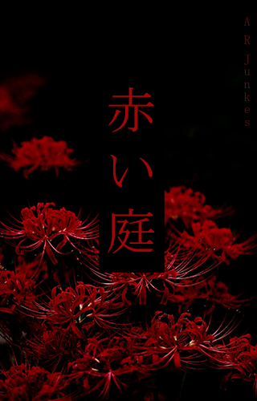

赤い庭
Haru se reencontra com seu namorado, Teodoro, mas ele é levado pelo exército inimigo. Então Haru se une ao exército paradinho para regatá-lo no país das maquinas.
A. R. Junkes
Valor Não encontrado